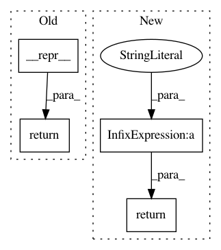

6a6d14bbf70669c69b6edc135ef65e6bad511608,sympy/polys/matrices/ddm.py,DDM,__str__,#DDM#,114
Before Change
return DDM(rows, self.shape, K)
def __str__(self):
return list.__repr__(self)
def __repr__(self):
cls = type(self).__name__
rows = list.__repr__(self)
After Change
def __str__(self):
rowsstr = ["[%s]" % ", ".join(map(str, row)) for row in self]
return "[%s]" % ", ".join(rowsstr)
def __repr__(self):
cls = type(self).__name__
rows = list.__repr__(self)
In pattern: SUPERPATTERN
Frequency: 3
Non-data size: 4
Instances
Project Name: sympy/sympy
Commit Name: 6a6d14bbf70669c69b6edc135ef65e6bad511608
Time: 2021-04-02
Author: oscar.j.benjamin@gmail.com
File Name: sympy/polys/matrices/ddm.py
Class Name: DDM
Method Name: __str__
Project Name: masa-su/pixyz
Commit Name: 4f8b3e494fe143d8c55f9327928458fb4a7171a1
Time: 2020-06-23
Author: kaneko@weblab.t.u-tokyo.ac.jp
File Name: pixyz/distributions/distributions.py
Class Name: MultiplyDistribution
Method Name: __repr__
Project Name: masa-su/pixyz
Commit Name: 6cb12a25ba993e6be2964f04948b0b9deb7ce6a4
Time: 2019-05-22
Author: masa@weblab.t.u-tokyo.ac.jp
File Name: pixyz/distributions/distributions.py
Class Name: MultiplyDistribution
Method Name: __repr__